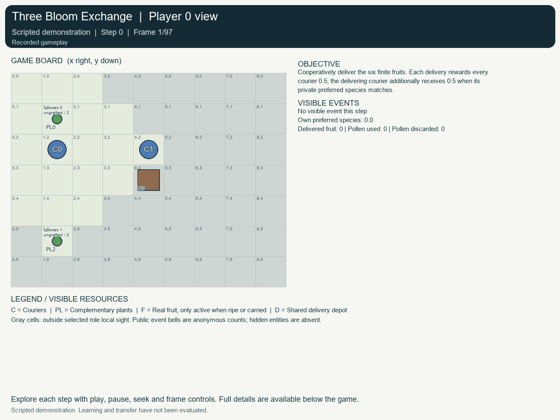
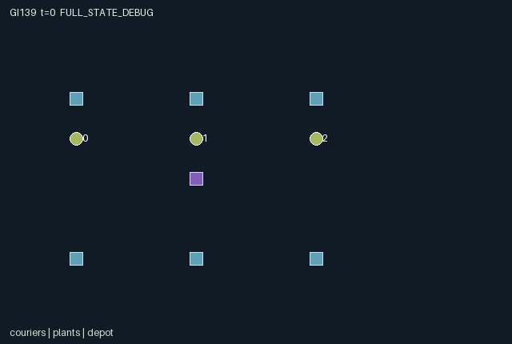

GI139 / SPATIAL
三花交换
花粉记住采集者，需由另一名快递员接手才能嫁接，并受花期与单格容量限制。
Original saved demonstration
Recorded native state, often authored scripts or interventions; information scope and failures are preserved in the original provenance. This is a saved demonstration, not live browser play.

Release verification episode
Untrained uniform legal actions. Actual JAX state sampled along the full original episode; full-state debug camera. No human performance or learning claim.

Run this game
crucibles play --game 139
Start Python locally, then open the address printed by the terminal. Installation, multiplayer, takeover and keyboard controls →
Objective, rewards & ending
Exact task contract
{
"objective": "Cooperatively deliver the six finite fruits. Each delivery rewards every courier 0.5; the delivering courier additionally receives 0.5 when its private preferred species matches.",
"natural_termination": "Six deliveries naturally complete the garden. Missing pollen or poor coordination may instead reach the 96-step truncation.",
"interaction": "A packet must pass to another handler before grafting. Grafting closes that plant as a pollen source, then opens a delayed harvest opportunity for any courier. One inventory slot and contested plants create route, handoff and harvesting tradeoffs.",
"observation_access": "Each role sees its own preference and inventory. Courier/plant/active-fruit payloads are visible only at Manhattan distance <=3; other payloads are zero with explicit visibility bits. Depot, clock, phase, aggregate stock-consumption counters and anonymous event-count bells are public. Preferences of other roles are never exposed in observations or entity attributes."
}Declared per-step reward bounds: 0 to 2. Observability: partially_observable.
Rules
- A courier has one shared slot for pollen or fruit. Pollen remembers its collector and must be handled by a different courier to graft.
- Species 0 flowers for four steps, then species 1 for four. A plant accepts opposite-species pollen only while flowering and ungrafted.
- GIVE and RECEIVE must be chosen by adjacent couriers on the same transition. A successful graft consumes one packet and grows for three later steps.
- Ripe fruit is a real object: harvest it, carry it, then deliver within one cell of (4,3). Each of six plants fruits only once.
- Local sight has Manhattan radius three. Public bells give anonymous event counts; each harvest preference stays private.
- Rotating courier order settles plant conflicts. Shared movement targets are rejected and currently occupied cells cannot be entered.
Original mechanism document (historical status wording retained)
# Three Bloom Exchange (game-v3-00139)
**Status: AUTHORED_NOT_EXECUTED.** This is an original initial-window train-only source package. Source, scene and literal action scripts are authored hypotheses. No candidate was imported, evaluated, replayed, trained or rendered during authoring. No final-test or earlier candidate/result input was used.
Source SHA-256: `01fe140143e8464ce2affdebe5c9aefa347536d5b309d0af03c478cf68994f08`.
Native boundary: A=3, O=120, U=12, H=96; homogeneous scalar int32 actions, float32 flat observations and rewards, fixed-key int32/bool state. Declared observation interval [0, 1], reward interval [0, 2]. These are representation/game bounds, not empirical acceptance thresholds.
## Garden, conserved resources and transition order
Three couriers move on a 9x7 open grid. Six fixed plants are at (1,1),(7,1),(1,5),(7,5),(4,1),(4,5), with species [0,1,1,0,0,1]. Each begins with two pollen packets, giving twelve finite units. Couriers start at (1,2),(4,2),(7,2). The common depot is (4,3). The reset key samples each courier's private preferred fruit species independently from {0,1}; there is no other randomness, and raw-step keys are unused.
Each courier has one shared inventory slot: one pollen packet or one fruit, never both. A pollen packet retains its original collector identity after every handoff. To graft a plant, a different courier must hold it; this explicit two-handler rule makes a partner's reception necessary. The target plant must be the opposite species and currently flowering. Species 0 opens for clock phases t=0..3 modulo 8, and species 1 for phases 4..7. Only ungrafted plants flower. Grafting therefore closes its remaining pollen stock to further collection, a real opportunity cost for future couriers.
All commands are legal intentions while the episode is live. Failed gather, give, receive, graft, harvest, delivery and discard attempts no-op. Out-of-range commands become wait. Movement obeys borders, prohibits swaps/following into currently occupied cells, and rejects all proposals sharing an otherwise empty target. Plants and the depot can share a courier's cell; they are interaction sites, not obstacles.
After movement, already-growing plants count down. A graft made on this transition starts at three; it becomes ripe after three later transitions. Then GIVE/RECEIVE rendezvous resolve. A giver carrying pollen needs an adjacent empty courier selecting RECEIVE. Ties among receivers and competing givers follow rotating rank/order (id-t) mod 3. A packet's collector identity is preserved. There is no same-step give chain because GIVE and RECEIVE are distinct actions.
Plant commands then resolve in rotating actor order. A courier considers plants within Manhattan distance one, with the lowest eligible plant id breaking site ties. GATHER removes a finite pollen unit; GRAFT consumes a compatible transferred packet and starts the growth clock; HARVEST takes a ripe fruit if the shared slot is empty. A plant can produce only one fruit. The six fruit entity slots are inactive before ripeness, located on their plant when ripe, carried at the responsible courier's actual endpoint, then inactive at the depot once delivered. A newly ripe fruit can be harvested on that same later transition.
DELIVER works within Manhattan distance one of the depot. Every delivery gives 0.5 to each courier and an additional 0.5 to the delivering courier only if the fruit matches its private preference. DISCARD destroys held pollen permanently and records that loss; fruit cannot be discarded. Delivering all six fruits naturally ends the task. Resource mistakes and failed coordination may leave the garden incomplete until the 96-step truncation; no artificial score criterion prevents those outcomes.
## Causal interaction and competing schedules
A courier cannot collect and immediately use its own packet. Its partner can enable or refuse the transfer, redirect a compatible packet to another plant, or occupy the intended rendezvous cell. Successful grafting removes a flower as a resource source now and creates a delayed ripe-fruit opportunity later, potentially for a third courier. All three agents therefore affect each other's feasible future actions through physical inventory, opening windows and locations.
A team can use short local exchanges between paired gatherers and specialized harvest runners, or circulate pollen around the garden and let couriers switch roles. Early grafting minimizes maturation delay but can seal off unused pollen. Delaying it preserves stock and may suit another courier's route, at the risk of missing the four-step flowering window. A courier may prefer to deliver its favorite species for the private bonus; allowing another courier to harvest still creates a shared reward. None of these candidate strategies has been optimized or measured.
## Information and visual fidelity
Own preference and inventory are private/self fields. Other courier inventories, all plant state and actual active fruits are observed only within Manhattan radius three. Hidden payloads are zero with an explicit visibility bit; the entity visibility matrices use exactly the same distance rule. Other couriers' private preferences are absent from scene attributes and public observations.
The depot, current flowering phase, delivery and consumed/discarded-pollen totals are public. Garden bells publicly report aggregate event counts without actor/site identities, including movement conflicts. These public bells are explicitly included in native observations; the scene does not invent extra distant-event information. Reset plant layout and the open rectangular bounds are fixed rules, but current hidden plant stock/stage remains unavailable until observed. Fruit and plant are separate physical stages; animation must not draw inactive unborn or delivered fruit.
## Declared invariants and boundedness
- sum(plant_stock) + count(pollen_kind>=0) + pollen_used + pollen_discarded = 12. A handoff preserves this total; grafting and discard only move a packet into the corresponding consumed ledger.
- Each courier carries at most one item across pollen_kind and fruit_load. An empty pollen slot has collector=-1; a held packet has a valid original collector.
- A plant stage advances only 0 -> 1 -> 2 -> 3. Its growth countdown is in 0..3; uncollected pollen stock is in 0..2.
- Each fruit id appears in at most one courier load and agrees with fruit_owner. A delivered fruit stays delivered and cannot be rewarded again.
- Active couriers remain on distinct in-bounds cells. Plant positions are constant; carried fruit positions follow the carrier.
- All preferences and species are binary; delivered is in 0..6 and consumed/discarded pollen in 0..12. Three simultaneous deliveries can reward a courier at most 2.0.
- These are declared source properties for future independent checks, not executed assertions.
Changing plant spacing, phase duration, sight radius, the two-handler rule or preference distribution could change the coordination problem. Such variants are prospective ideas requiring separately identified sources and protocols; no claim of trained adaptation or transfer follows from this authoring.
## Exact action legend
- 0: Wait.
- 1: Move north.
- 2: Move east.
- 3: Move south.
- 4: Move west.
- 5: Gather one pollen packet.
- 6: Give pollen to an adjacent receiving courier.
- 7: Receive pollen into an empty inventory.
- 8: Graft opposite-species pollen handled by another collector.
- 9: Harvest one ripe fruit into an empty inventory.
- 10: Deliver carried fruit within one cell of the depot.
- 11: Discard held pollen permanently.
## Native observation columns
- [0:5), self: Self: id/4,private preferred species,(pollen_kind+1)/2,(collector+1)/4,(fruit_load+1)/8.
- [5:10), public: Public: t/128,flowering phase,delivered/8,discarded pollen/16,used pollen/16.
- [10:28), local: Three local courier records, stride 6: visible,x/16,y/16,(pollen_kind+1)/2,(collector+1)/4,(fruit_load+1)/8; hidden payloads zero.
- [28:76), local: Six local plant records, stride 8: visible,x/16,y/16,species,flowering,stock/2,stage/4,growth/4; hidden payloads zero.
- [76:106), local: Six local active fruit records, stride 5: visible,x/16,y/16,species,(owner+2)/8; hidden/inactive payloads zero.
- [106:108), public: Public depot x/16,y/16.
- [108:115), public: Public event counts/8 in order gather,handoff,pollination,ripening,harvest,delivery,collision; no actor or site identity.
- [115:120), padding: Five constant zeros.
The renderer binds only these real state groups, positions, active masks and role visibility masks. Glyphs and inert colors carry no extra rule. A carried object shares the actual carrier endpoint; flight, growth, support changes, leases and service are real state transitions. Frame interpolation is presentation only and must not invent a catch, handoff, crossing or private observation. Debug/full-state view must remain separately labeled.
## Authored paired interventions
The complete literal integer vectors, including every prefix step, are saved in playthrough.json. These are not observed trajectories or guaranteed successful solutions.
**receiver_opens_third_courier_future_harvest**
Only courier 1 changes RECEIVE to WAIT at the rendezvous. All later actions match. A should create a fruit for courier 2; B should leave the same graft, harvest and delivery attempts without that resource. No trajectory was executed.
Prefix (2 joint steps): `[[5,0,0],[2,4,0]]`.
Branch A suffix: `[[6,7,0],[0,2,0],[0,2,0],[0,2,3],[0,1,0],[0,8,0],[0,0,1],[0,0,1],[0,0,9],[0,0,3],[0,0,3],[0,0,4],[0,0,4],[0,0,10]]`.
Branch B suffix: `[[6,0,0],[0,2,0],[0,2,0],[0,2,3],[0,1,0],[0,8,0],[0,0,1],[0,0,1],[0,0,9],[0,0,3],[0,0,3],[0,0,4],[0,0,4],[0,0,10]]`.
## Raw terminal and boundary semantics
A live raw step advances t once. Natural termination takes priority over the horizon: truncated=(next_t>=H) and not terminated; episode_done=terminated or truncated. raw_step uses an absorbing branch for an already completed state: every leaf and observation remain unchanged, reward is zero, all per-agent dones stay true, and terminal causes are preserved. No reset occurs in raw_step. A later trusted wrapper may reset outside it; an absorbing call is not a new learning transition or a new occurrence of the preserved last-transition event flags.
Invalid/out-of-range commands deterministically become action 0. Every role always has action 0. All small signed codes, clocks, indices and inventories use int32; masks and terminal causes use bool. The externally supplied uint32 reset key is not duplicated in the state. Scaling uses powers of two. This design choice is not a numeric-parity result.
The required community adapter remains a separate implementation-layer deliverable: map native array row i to agent_i in action/observation/reward/done dictionaries and map info.done_all to __all__, preserving these masks, role observations, raw terminal causes and inactive-role semantics. This six-file author package neither implements that adapter nor silently replaces a frozen learner.
## Literal source evidence
- `refresh`: candidate.py lines 15-28.
- `reset`: candidate.py lines 30-67.
- `legal_actions`: candidate.py lines 69-72.
- `advance`: candidate.py lines 74-176.
- `observe`: candidate.py lines 178-206.
- `raw_step`: candidate.py lines 208-213.
Native local visibility — candidate.py line 21:
```python
n["plant_visibility"] = plant_distance <= 3
```
Complementary physical flowering phase — candidate.py line 17:
```python
n["plant_flowering"] = (state["plant_stage"] == 0) & (jnp.mod(state["t"] // 4, 2) == state["plant_species"])
```
Delayed ripe-fruit creation — candidate.py line 99:
```python
ripened = growing & (n["plant_growth"] == 0)
```
A partner must explicitly accept the packet — candidate.py line 108:
```python
receivers = adjacent & (a == 7) & (n["pollen_kind"] < 0) & (n["fruit_load"] < 0) & (ids != i)
```
Successful two-agent rendezvous — candidate.py line 110:
```python
give = (a[i] == 6) & (n["pollen_kind"][i] >= 0) & jnp.any(receivers)
```
Collector identity survives the transfer — candidate.py line 112:
```python
old_collector = n["pollen_collector"][i]
```
Grafting cannot use a self-collected packet — candidate.py line 136:
```python
graft = (a[i] == 8) & (n["pollen_kind"][i] >= 0) & (n["pollen_collector"][i] != i) & jnp.any(compatible)
```
Harvest creates another courier transport opportunity — candidate.py line 147:
```python
harvest = (a[i] == 9) & empty & jnp.any(harvestable)
```
Shared delivery and private preference reward — candidate.py line 175:
```python
reward = (0.5 * jnp.sum(delivered_by.astype(jnp.float32)) + 0.5 * preferred_by.astype(jnp.float32)).astype(jnp.float32)
```
Public bells have native observation columns — candidate.py line 206:
```python
jnp.broadcast_to(bells, (3, 7)), jnp.zeros((3, 5), dtype=jnp.float32)), axis=1).astype(jnp.float32)
```
Actual natural completion — candidate.py line 171:
```python
n["terminated"] = n["delivered"][0] == 6
```
## Reference use and provenance
All game rules and kernel expressions were authored for this assigned design; no upstream game, board implementation, model weights or learner code was copied. The allowed reference snapshots were read as inspiration and interface context. Their exact identities are also recorded in generation_record.json.
- JaxMARL supplies the community parallel, agent-keyed API model and the idea of distinct environment/algorithm components. Its example game rules were not copied.
- Pgx supplies explicit-key, legal-mask and state/visualization API context for discrete games. It is a board-game environment library, not this spatial game's implementation.
- Craftax supplies inspiration for stateful spatial inventory and persistent world consequences. The assigned rules are independent of Craftax's game mechanics.
- PureJaxRL is an end-to-end algorithm implementation reference. Craftax_Baselines/ppo_rnn.py is recurrent PPO integration code and credits Chris Lu/PureJaxRL. Neither is treated as a new game library or substituted for the experiment's learner.
- `references\JaxMARL_README.md`; SHA-256 `6649d04f5ed05d620e78e8416a00d4db841cf2633ae60fdb3c9729e037a71c15`; source: https://github.com/bold-lab-ai/JaxMARL/blob/main/README.md.
- `references\Pgx_README.md`; SHA-256 `153f44999e55d5df3e51e13dee6ef418cc9704ddfa26206f1dc5789b9cbbf8df`; source: https://github.com/sotetsuk/pgx/blob/main/README.md.
- `references\PureJaxRL_README.md`; SHA-256 `d5f40182c924a42cec820931e61a7d5070e48c4c8413c7d16455abc6ea0ef6b0`; source: https://github.com/luchris429/purejaxrl/blob/main/README.md.
- `references\Craftax_Baselines_ppo_rnn.py`; SHA-256 `5f93e6a7c3a1e0c551831d75be311735ba495dfdecae51787a1c03a27b1cd011`; source: https://github.com/MichaelTMatthews/Craftax_Baselines/blob/main/ppo_rnn.py.
- `references\Craftax_README.md`; SHA-256 `7f9757a2047143cf183f7e2e84851a740f386af80dbee050c89b316d66a3d3ff`; source: https://github.com/MichaelTMatthews/Craftax/blob/main/README.md.
Only this batch's sanitized requests/designs/contracts and the five supplied snapshots were inputs. Shared input bytes were not modified. Local AST/data checks do not establish successful JAX execution, eager/JIT/vmap parity, legal-script replay, balance, learnability, strategic richness, non-isomorphism, adaptation or meta-RL transfer. Actual replay, animation, community adapter behavior and scientific evidence require the separately authorized execution and review stages.
Commands
Roles & abilities
agent_0 courier_0 with private harvest preference
agent_1 courier_1 with private harvest preference
agent_2 courier_2 with private harvest preference
Observation permissions
Training receives only the original observation rows. Role cameras use declared visibility; debug cameras are explicitly marked. Local benchmark records log debug exposure and role takeover history.
Exact observation layout
[
{
"slice": [
0,
5
],
"meaning": "Self: id/4,private preferred species,(pollen_kind+1)/2,(collector+1)/4,(fruit_load+1)/8",
"visibility": "self"
},
{
"slice": [
5,
10
],
"meaning": "Public: t/128,flowering phase,delivered/8,discarded pollen/16,used pollen/16",
"visibility": "public"
},
{
"slice": [
10,
28
],
"meaning": "Three local courier records, stride 6: visible,x/16,y/16,(pollen_kind+1)/2,(collector+1)/4,(fruit_load+1)/8; hidden payloads zero",
"visibility": "local"
},
{
"slice": [
28,
76
],
"meaning": "Six local plant records, stride 8: visible,x/16,y/16,species,flowering,stock/2,stage/4,growth/4; hidden payloads zero",
"visibility": "local"
},
{
"slice": [
76,
106
],
"meaning": "Six local active fruit records, stride 5: visible,x/16,y/16,species,(owner+2)/8; hidden/inactive payloads zero",
"visibility": "local"
},
{
"slice": [
106,
108
],
"meaning": "Public depot x/16,y/16",
"visibility": "public"
},
{
"slice": [
108,
115
],
"meaning": "Public event counts/8 in order gather,handoff,pollination,ripening,harvest,delivery,collision; no actor or site identity",
"visibility": "public"
},
{
"slice": [
115,
120
],
"meaning": "Five constant zeros",
"visibility": "padding"
}
]Entity visibility & attributes
[
{
"id": "couriers",
"kind": "agent",
"count": 3,
"position": [
"agent_pos"
],
"active": [
"agent_active"
],
"visibility": [
"agent_visibility"
],
"attributes": [
{
"state_path": [
"pollen_kind"
],
"meaning": "Carried pollen species; -1 empty",
"display": "category"
},
{
"state_path": [
"pollen_collector"
],
"meaning": "Original collector id; -1 empty",
"display": "category"
},
{
"state_path": [
"fruit_load"
],
"meaning": "Carried fruit id; -1 none",
"display": "category"
}
]
},
{
"id": "plants",
"kind": "resource",
"count": 6,
"position": [
"plant_pos"
],
"active": [
"plant_active"
],
"visibility": [
"plant_visibility"
],
"attributes": [
{
"state_path": [
"plant_species"
],
"meaning": "Plant species 0 or 1",
"display": "category"
},
{
"state_path": [
"plant_stock"
],
"meaning": "Uncollected pollen units, initially two",
"display": "bar"
},
{
"state_path": [
"plant_stage"
],
"meaning": "0 ungrafted, 1 growing, 2 ripe, 3 harvested",
"display": "category"
},
{
"state_path": [
"plant_growth"
],
"meaning": "Remaining later steps to ripeness",
"display": "number"
},
{
"state_path": [
"plant_flowering"
],
"meaning": "Currently open to collection and grafting",
"display": "flag"
}
]
},
{
"id": "fruit",
"kind": "object",
"count": 6,
"position": [
"fruit_pos"
],
"active": [
"fruit_active"
],
"visibility": [
"fruit_visibility"
],
"attributes": [
{
"state_path": [
"fruit_species"
],
"meaning": "Fruit species inherited from its plant",
"display": "category"
},
{
"state_path": [
"fruit_owner"
],
"meaning": "-2 unborn, -1 ripe on plant, 0..2 carried, 3 delivered",
"display": "category"
}
]
},
{
"id": "depot",
"kind": "landmark",
"count": 1,
"position": [
"depot_pos"
],
"active": [
"depot_active"
],
"visibility": [
"depot_visibility"
],
"attributes": [
{
"state_path": [
"delivered"
],
"meaning": "Fruit delivered across all couriers",
"display": "number"
}
]
}
]Actual verification & provenance
Per-game execution receipt
{
"game": "gi139",
"status": "PASS",
"verification_revision": 2,
"source_sha256": "01fe140143e8464ce2affdebe5c9aefa347536d5b309d0af03c478cf68994f08",
"seed": 20261101,
"runtime": {
"jax": "0.4.38",
"numpy": "1.26.4",
"devices": [
"TFRT_CPU_0"
]
},
"dimensions": {
"num_agents": 3,
"observation_size": 120,
"num_actions": 12,
"max_steps": 96
},
"checks": {
"eager_reset": {
"status": "PASS",
"seconds": 2.300873041152954
},
"observation_spaces_legal_masks": {
"status": "PASS",
"seconds": 0.26352906227111816
},
"eager_step": {
"status": "PASS",
"seconds": 1.6484415531158447
},
"jit_reset": {
"status": "PASS",
"seconds": 0.21048212051391602
},
"jit_step": {
"status": "PASS",
"seconds": 1.4945790767669678
},
"eager_jit_integer_parity_float_measurement": {
"status": "PASS",
"seconds": 0.0065119266510009766
},
"jit_vmap_reset": {
"status": "PASS",
"seconds": 0.3909885883331299
},
"jit_vmap_step": {
"status": "PASS",
"seconds": 2.0067570209503174
},
"outer_autoreset_api": {
"status": "PASS",
"seconds": 2.0437586307525635
},
"full_original_horizon_episode_and_render": {
"status": "PASS",
"seconds": 0.9966812133789062
}
},
"human_scores": null,
"browser_controls": "PENDING",
"failures": [],
"elapsed_seconds": 11.821202516555786,
"float_parity_max_abs": 0.0,
"numerical_parity": "EXACT",
"raw_terminal_absorbing": "PASS",
"terminal_outer_reset": "PASS",
"episode_steps": 96,
"scripted_random_returns": [
0.0,
0.0,
0.0
],
"terminal": true,
"demo_information": "FULL_STATE_DEBUG",
"demo_frames": 25,
"render_roles_checked": 3
}Chromium control verification
{
"game": "gi139",
"status": "PASS",
"human_scores": null,
"engineering": true,
"checks": [
"catalog_selected_and_real_native_reset",
"keyboard_native_direction_command",
"dom_queue_and_native_step",
"second_participant_ownership_and_native_joint_step",
"all_roles_individually_controllable_no_role_cap",
"explicit_debug_camera",
"release_to_pure_ai_without_reset",
"close_session_preserves_log"
],
"ui_sha256": "96243f9de144b80b5e20a114330e2206bdcd58d3efc9c6f13bbc08b95cacc14d",
"keyboard_action_id": 1,
"seconds": 5.410372018814087
}Original identity and file hashes
{
"id": 139,
"key": "gi139",
"title": "三花交换",
"summary": "花粉记住采集者，需由另一名快递员接手才能嫁接，并受花期与单格容量限制。",
"tags": [
"互补交接",
"生态时序"
],
"family": "spatial",
"dimensions": {
"num_agents": 3,
"observation_size": 120,
"num_actions": 12,
"max_steps": 96
},
"source_sha256": "01fe140143e8464ce2affdebe5c9aefa347536d5b309d0af03c478cf68994f08",
"manifest_sha256": "218eedb89a697b2e783770ef157159b8cd8fc93870164ef7787bd763822994b0",
"files": [
{
"file": "candidate.py",
"sha256": "01fe140143e8464ce2affdebe5c9aefa347536d5b309d0af03c478cf68994f08",
"bytes": 14284,
"origin": "work/exp_2/game_incubator_v3/community_games222_225_visualization_root222_v1/native154_candidate/registry/v2/games/game-v3-00139/candidate.py"
},
{
"file": "manifest.json",
"sha256": "218eedb89a697b2e783770ef157159b8cd8fc93870164ef7787bd763822994b0",
"bytes": 14811,
"origin": "work/exp_2/game_incubator_v3/community_games222_225_visualization_root222_v1/native154_candidate/registry/v2/games/game-v3-00139/manifest.json"
},
{
"file": "scene.json",
"sha256": "22940e04be0941df843d8b9f479b69d10a7a2e01e445bbf66f60f6dca180dedd",
"bytes": 7860,
"origin": "work/exp_2/game_incubator_v3/community_games222_225_visualization_root222_v1/native154_candidate/registry/v2/games/game-v3-00139/scene.json"
},
{
"file": "mechanism.md",
"sha256": "90bd41fc1529e575a302d0c5bdf628397bb74822829014d83c0032354e71c020",
"bytes": 15744,
"origin": "work/exp_2/game_incubator_v3/sources/game-v3-00139/attempt_00/mechanism.md"
},
{
"file": "playthrough.json",
"sha256": "e7383b5cc6da2198528b1abf633c3ec2554be04bdcd9ef9afdc992a93d1427a8",
"bytes": 4355,
"origin": "work/exp_2/game_incubator_v3/sources/game-v3-00139/attempt_00/playthrough.json"
}
],
"original_status": "NATIVE154_REFERENCE",
"original_saved_replay": true,
"release_validation": "PASS",
"human_scores": null,
"browser_validation": "PASS"
}